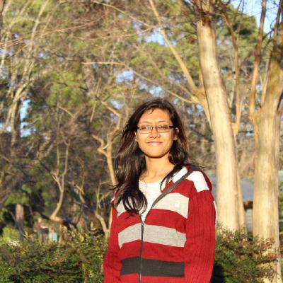

Satabdi Saha
Postdoctoral Fellow
UT MD Anderson Cancer Center
Postdoctoral Fellow, Department of Biostatistics, UT MD Anderson Cancer Center
I am currently a Postdoctoral Fellow in the Department of Biostatistics at The University of Texas MD Anderson Cancer Center (UTMDACC) , advised by Dr. Christine Peterson . My research focuses on developing Bayesian statistical methods for high-dimensional and compositional data, with applications in microbiome and multi-omics integration. In particular, my work emphasizes variable selection, clustering, and predictive modeling to advance principled approaches for complex biomedical data in cancer research.
From 2023 to 2024, I also served as an Institute for Data Science in Oncology (IDSO) Fellow at UTMDACC. Prior to this, I completed my Ph.D. in Statistics at Michigan State University under the supervision of Dr. Tapabrata Maiti , where I developed hypothesis-testing approaches and graphical models for the analysis of single-cell datasets, with an emphasis on pharmacogenomics.
Ph.D. in Statistics
Michigan State University
Advisor: Dr. Tapabrata Maiti
M.S. in Statistics
Michigan State University
B.S. / M.S. in Statistics
Add institution here
Postdoctoral Fellow
Department of Biostatistics, UT MD Anderson Cancer Center
Current
Institute for Data Science in Oncology Fellow
UT MD Anderson Cancer Center
2023–2024
FDA OCE-ASA Oncology Educational Fellow
FDA Oncology Center of Excellence / American Statistical Association
2024